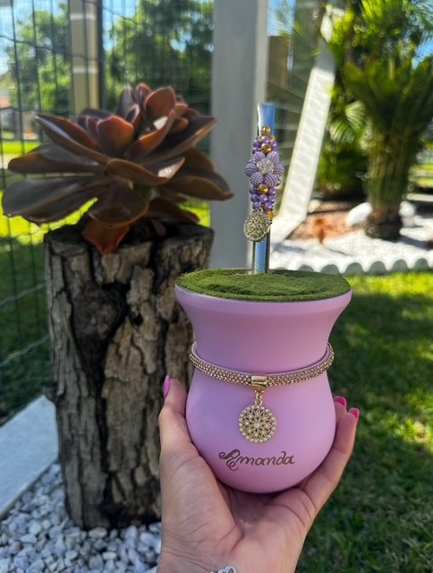
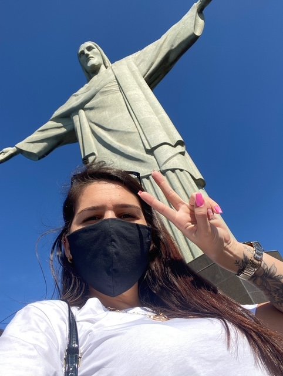

➺ My Life
Hi there!
I’m Amanda, a Brazilian living in Sydney since August 2022.
I was raised in a city called Gravataí (yep, it’s a weird name!) by my parents, Paulo and Mara, along with my older sister, Tanise.
Since I was little, I’ve always been super active. I started my first internship when I was just 15, still in high school.
I dedicated a big part of my teenage and early adult years to sports like volleyball and dance.
I’m from Rio Grande do Sul, a state with strong cultural roots. We take pride in our traditions — from rodeos and gaúcho dances to local food, our regional accent, and of course, our beloved chimarrão (a traditional mate tea we drink all the time!).
At 27, I moved to southeast Brazil. I spent a few months in a little paradise called Paraty, and later lived for a while in Rio de Janeiro – the Wonderful City!
Rio is one of the most iconic places in Brazil, famous for its beautiful beaches, tropical vibes, and the amazing Cristo Redentor, one of the Seven Wonders of the World.
After leaving my last job in Rio, I felt it was the right time to spread my wings and chase something new — so I chose Australia! Now I’m here, pushing myself every day to learn a new language and build a new career.
I share this adventure with my partner, Daniel, who’s a tech lead and full stack developer — and my biggest supporter! He’s the one who sparked my curiosity for the world of tech, and thanks to him, I’ve started exploring this exciting journey.
Here are some photos that show a bit of our culture — chimarrão, traditional life from southern Brazil, and the amazing Cristo Redentor in Rio.
These images represent important parts of my story and where I come from.
Chimarrão

Cristo Redentor

Gaúcho